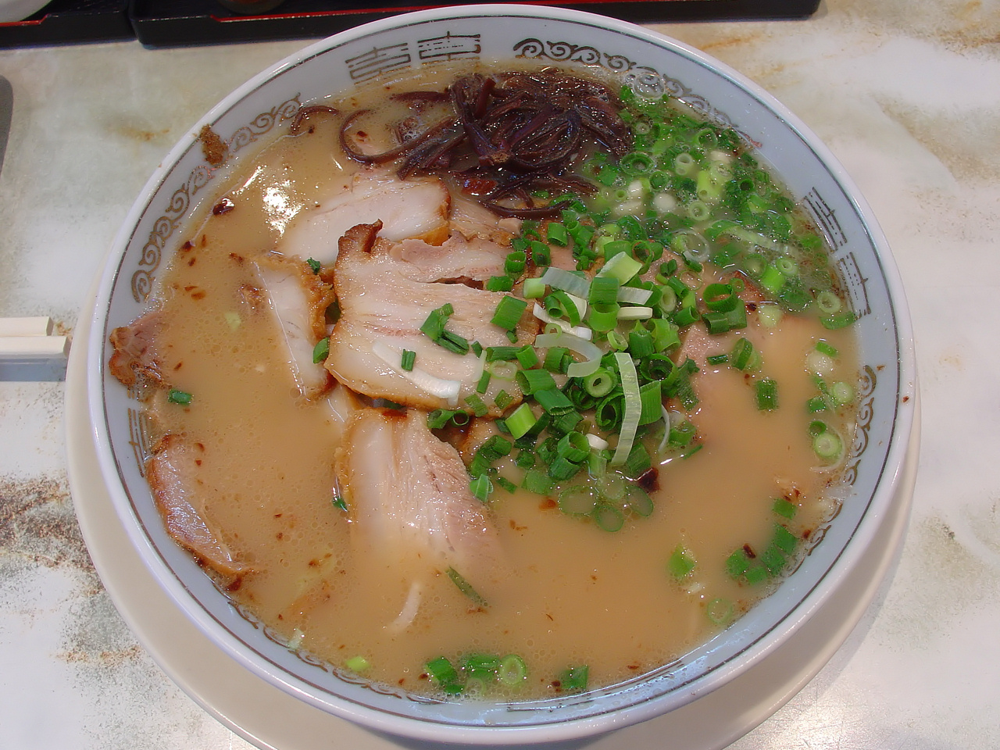

Kagoshima Ramen
「鹿児島ラーメン — A southern ramen with a noble, creamy taste.」
Kagoshima Ramen blends influences from northern and southern Japan. Its broth mixes pork and chicken, achieving a creamy but milder flavor than tonkotsu. It is smooth and slightly sweet.
Ingredients
- Pork and chicken broth
- Medium noodles
- Bamboo shoots, egg and nori seaweed
Flavor
Creamy and balanced.
Aroma
Subtle, with smoky and light notes.
Texture
Light, with medium body and pleasant mouthfeel.